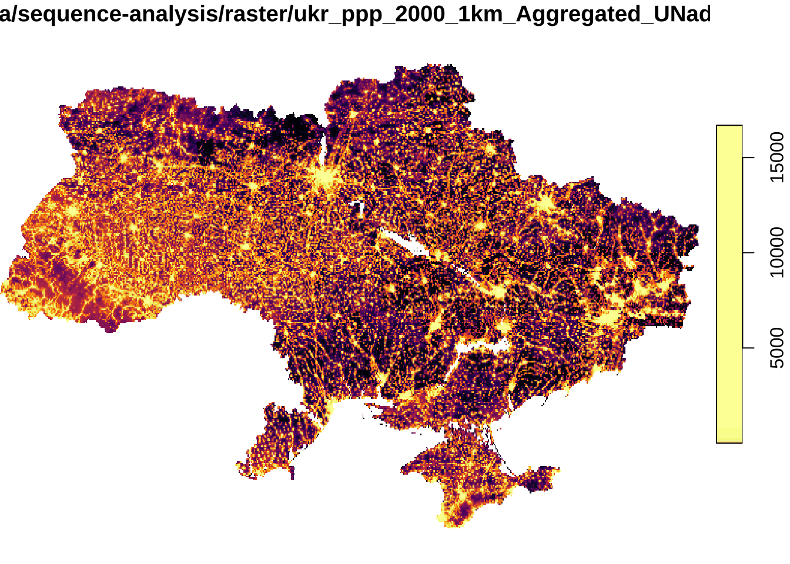
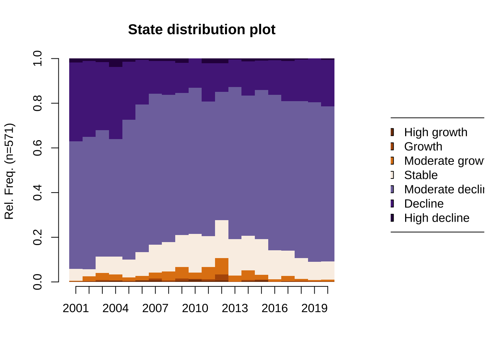
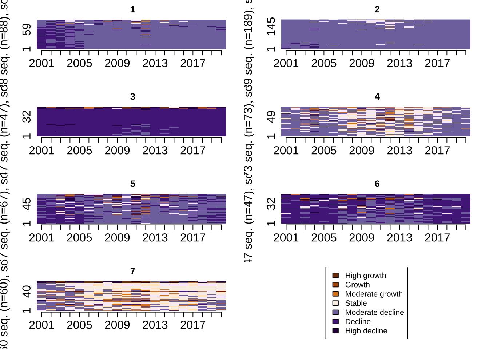
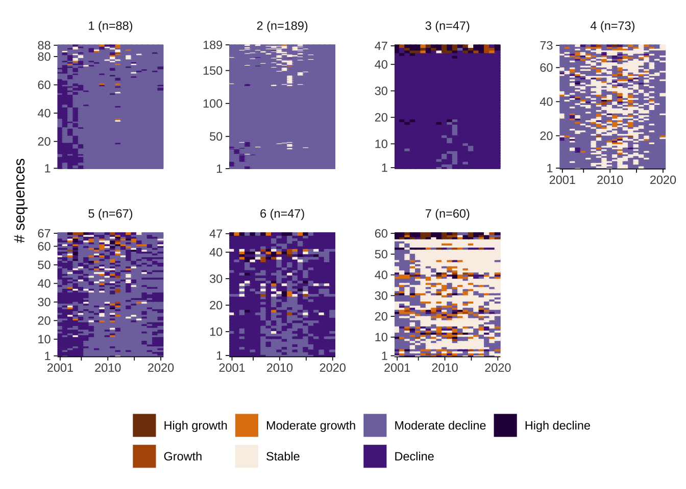
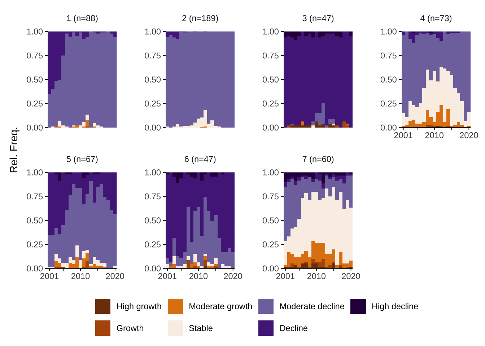
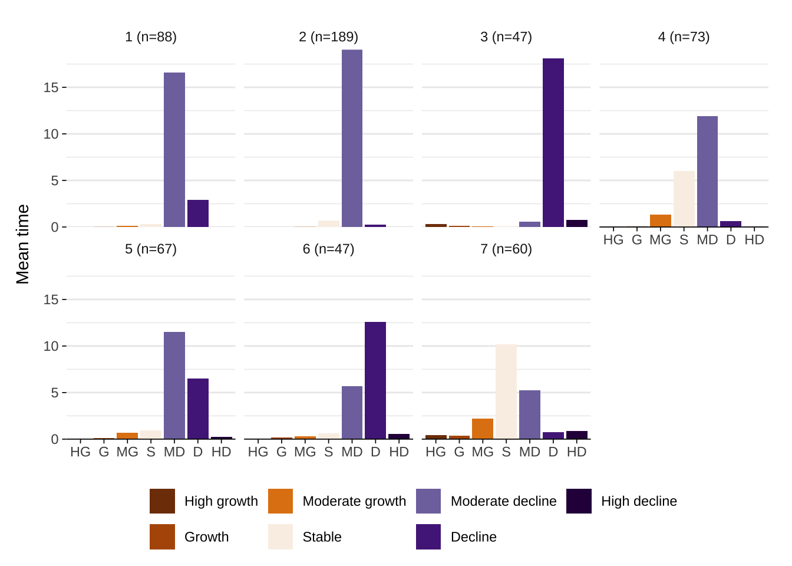
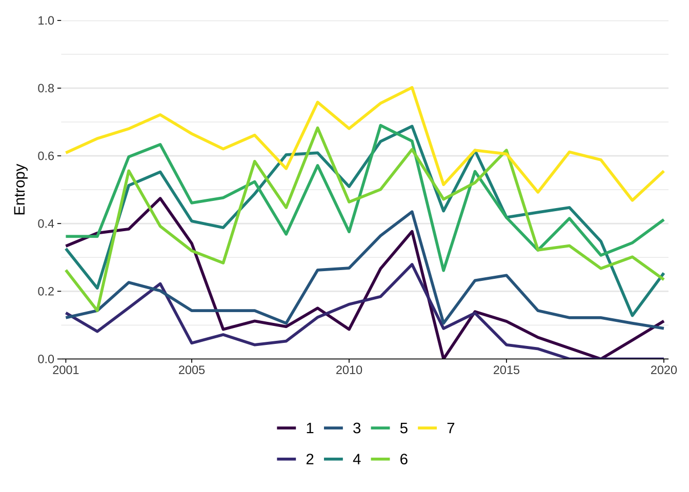

# data manipulation
library(tidyverse)
# spatial data manipulation
library(stars)
library(sf)
# download world pop data
library(wpgpDownloadR) # you may need to install this package running `install.packages("devtools")` `devtools::install_github("wpgp/wpgpDownloadR")'
# data visualisation
library(viridis)
library(RColorBrewer)
library(patchwork)
library(ggseqplot) # may need to install by running `devtools::install_github("maraab23/ggseqplot")`
# sequence analysis
library(TraMineR)
# cluster analysis
library(cluster)4 Sequence Analysis
This chapter illustrates the use of sequence analysis and WorldPop raster data to identify trajectories of population decline in Ukraine. Developed in Biology for the analysis of DNA sequencing, sequence analysis offers a novel approach to generate a more holistic understanding of population decline trajectories capturing differences in the ordering, frequency, timing and occurrence of population decline. The longitudinal and categorical nature is a key feature of the data that can be analysed using sequence analysis. In this chapter, We first show how to manipulate gridded, raster population to create a spatial data frame, and explore national and sub-national population trends and spatial structure of population change. We describe the process of implementing sequence analysis to identify trajectories of population decline in a four-stage process. We first define different levels of population change. Second, we apply measure the difference or similarity between individual area-level trajectories. Third, we use an unsupervised machine learning clustering algorithm to identify representative trajectories. Fourth, we use different visualisation tools to understand key features encoded in trajectories.
The chapter is based on the following references:
Gabadinho et al. (2011) describe the functionalities of the TraMineR package to visualise and analysis categorical sequence data;
Newsham and Rowe (2022b), González-Leonardo, Newsham, and Rowe (2023) provide empirical applications to identify and study trajectories of population decline across Europe and in Spain;
Tatem (2017) provide an overview of the WorldPop data project;
Patias, Rowe, and Arribas-Bel (2021), Patias et al. (2021) provide good examples of the use of sequence analysis to define trajectories of inequality and urban development.
4.1 Dependencies
We use the libraries below. Note that to use the theme_tufte2() used for ggplot() objects in this chapter, you need to call the file data-viz-themes.R in the repository.
Key packages to this chapter are TraMineR,stars and ggseqplot. TraMineR is the go-to package in social sciences for exploring, analysing and rendering sequences based on categorical data. stars is designed to handle spatio-temporal data in the form of dense arrays, with space and time as dimensions. stars provides classes and methods for reading, manipulating, plotting and writing data cubes. It is a very powerful package. It interacts nicely with sf and is suggested to be superior to raster and terra, which are also known for their capacity to work with multilayer rasters. stars is suggested to deal with more complex data types and be faster than raster and terra. ggseqplot provides functionality to visualise categorical sequence data based on ggplot capabilities. This differs from TraMineR which is based on the base function plot. We prefer ggseqplot for the wide usage of ggplot as a data visualisation tool in R.
4.2 Data
The key aim of this chapter is to define representative trajectories of population decline using sequence analysis and WorldPop data. We use WorldPop data for the period extending from 2000 to 2020. WorldPop offers open access gridded population estimates at a high spatial resolution for all countries in the world. WoldPop produces these gridded datasets using a top-down (i.e. dissagregating administrative area counts into smaller grid cells) or bottom-up (i.e. interpolating data from counts from sample locations into grid cells) approach. You can learn about about these approaches and the data available from WorldPop.
WorldPop population data are available in various formats:
Two spatial resolutions: 100m and 1km;
Constrained and unconstrained counts to built settlement areas;
Adjusted or unadjusted to United Nations’ (UN) national population counts;
Two formats i.e.
tiffandcsvformats.
We use annual 1km gridded, UN adjusted, unconstrained population count data for Ukraine during 2000-2021 in tiff format. We use tiff formats to illustrate the manipulation of raster data. Such skills will come handy if you ever decide to work with satellite imagery or image data in general.
Before calling the data, let’s see how we can use wpgpDownloadR package. Let’s browse the data catalogue.
wpgpListCountries() %>%
head()Warning in readLines(con, n = 1): incomplete final line found on
'/var/folders/pt/t0w6_05j22dctdkh3pgkpfjc0000gp/T//RtmpNYKRFn/wpgpDatasets.md5' ISO ISO3 Country
1 643 RUS Russia
2 360 IDN Indonesia
3 840 USA United States
4 850 VIR Virgin_Islands_U_S
5 304 GRL Greenland
6 156 CHN ChinaBy using the ISO3 country code, let’s look for the available datasets for Ukraine.
wpgpListCountryDatasets(ISO3 = "UKR") %>%
head()Warning in readLines(con, n = 1): incomplete final line found on
'/var/folders/pt/t0w6_05j22dctdkh3pgkpfjc0000gp/T//RtmpNYKRFn/wpgpDatasets.md5' ISO ISO3 Country Covariate
232 804 UKR Ukraine ppp_2000
481 804 UKR Ukraine ppp_2001
730 804 UKR Ukraine ppp_2002
979 804 UKR Ukraine ppp_2003
1228 804 UKR Ukraine ppp_2004
1477 804 UKR Ukraine ppp_2005
Description
232 Estimated total number of people per grid-cell 2000 The dataset is available to download in Geotiff format at a resolution of 3 arc (approximately 100m at the equator)
481 Estimated total number of people per grid-cell 2001 The dataset is available to download in Geotiff format at a resolution of 3 arc (approximately 100m at the equator)
730 Estimated total number of people per grid-cell 2002 The dataset is available to download in Geotiff format at a resolution of 3 arc (approximately 100m at the equator)
979 Estimated total number of people per grid-cell 2003 The dataset is available to download in Geotiff format at a resolution of 3 arc (approximately 100m at the equator)
1228 Estimated total number of people per grid-cell 2004 The dataset is available to download in Geotiff format at a resolution of 3 arc (approximately 100m at the equator)
1477 Estimated total number of people per grid-cell 2005 The dataset is available to download in Geotiff format at a resolution of 3 arc (approximately 100m at the equator)The wpgpDownloadR package includes 100m resolution data. To keep things efficient, we use 1km gridded population counts from the WorldPop data page. Obtain population data for Ukraine 2000-2020. We start by reading the set of tiff files using the read_stars function from the star package.
# create a list of file names
file_list <- fs::dir_ls("./data/sequence-analysis/raster")
file_list./data/sequence-analysis/raster/ukr_ppp_2000_1km_Aggregated_UNadj.tif
./data/sequence-analysis/raster/ukr_ppp_2001_1km_Aggregated_UNadj.tif
./data/sequence-analysis/raster/ukr_ppp_2002_1km_Aggregated_UNadj.tif
./data/sequence-analysis/raster/ukr_ppp_2003_1km_Aggregated_UNadj.tif
./data/sequence-analysis/raster/ukr_ppp_2004_1km_Aggregated_UNadj.tif
./data/sequence-analysis/raster/ukr_ppp_2005_1km_Aggregated_UNadj.tif
./data/sequence-analysis/raster/ukr_ppp_2006_1km_Aggregated_UNadj.tif
./data/sequence-analysis/raster/ukr_ppp_2007_1km_Aggregated_UNadj.tif
./data/sequence-analysis/raster/ukr_ppp_2008_1km_Aggregated_UNadj.tif
./data/sequence-analysis/raster/ukr_ppp_2009_1km_Aggregated_UNadj.tif
./data/sequence-analysis/raster/ukr_ppp_2010_1km_Aggregated_UNadj.tif
./data/sequence-analysis/raster/ukr_ppp_2011_1km_Aggregated_UNadj.tif
./data/sequence-analysis/raster/ukr_ppp_2012_1km_Aggregated_UNadj.tif
./data/sequence-analysis/raster/ukr_ppp_2013_1km_Aggregated_UNadj.tif
./data/sequence-analysis/raster/ukr_ppp_2014_1km_Aggregated_UNadj.tif
./data/sequence-analysis/raster/ukr_ppp_2015_1km_Aggregated_UNadj.tif
./data/sequence-analysis/raster/ukr_ppp_2016_1km_Aggregated_UNadj.tif
./data/sequence-analysis/raster/ukr_ppp_2017_1km_Aggregated_UNadj.tif
./data/sequence-analysis/raster/ukr_ppp_2018_1km_Aggregated_UNadj.tif
./data/sequence-analysis/raster/ukr_ppp_2019_1km_Aggregated_UNadj.tif
./data/sequence-analysis/raster/ukr_ppp_2020_1km_Aggregated_UNadj.tif# read a list of raster data
pop_raster <- read_stars(file_list, quiet = TRUE)We map the data for 2000 to get a quick understanding of the data.
plot(pop_raster[1], col = inferno(100))downsample set to 2
Next we read shapefile of administrative boundaries in the form of polygons. We obtain these data from the GADM website. GADM provides maps and spatial data for individuals countries at the national and sub-national administrative divisions. In this chapter, we will work with these data as they come directly from the website which provides a more realistic and similar context to which you will probably come across in the “real-world”.
# read spatial data frame
ukr_shp <- st_read("./data/sequence-analysis/ukr_shp/gadm41_UKR_2.shp") %>%
st_simplify(., # simplify boundaries for efficiency
preserveTopology = T,
dTolerance = 1000) %>% # 1km
sf::st_make_valid(.) %>%
fortify(.) %>% # turns maps into a data frame so they can more easily be plotted with ggplot2
st_transform(., "EPSG:4326") # set projection systemReading layer `gadm41_UKR_2' from data source
`/Users/PIETROST/Library/CloudStorage/Dropbox/GitHub/r4ps/data/sequence-analysis/ukr_shp/gadm41_UKR_2.shp'
using driver `ESRI Shapefile'
Simple feature collection with 629 features and 13 fields
Geometry type: MULTIPOLYGON
Dimension: XY
Bounding box: xmin: 22.14045 ymin: 44.38597 xmax: 40.21807 ymax: 52.37503
Geodetic CRS: WGS 84ukr_shpSimple feature collection with 629 features and 13 fields (with 1 geometry empty)
Geometry type: GEOMETRY
Dimension: XY
Bounding box: xmin: 22.14519 ymin: 44.38681 xmax: 40.21807 ymax: 52.375
Geodetic CRS: WGS 84
First 10 features:
GID_2 GID_0 COUNTRY GID_1 NAME_1 NL_NAME_1 NAME_2
1 ? UKR Ukraine ? ? ? ?
2 UKR.1.1_1 UKR Ukraine UKR.1_1 Cherkasy Черкаська Cherkas'ka
3 UKR.1.2_1 UKR Ukraine UKR.1_1 Cherkasy Черкаська Cherkas'kyi
4 UKR.1.3_1 UKR Ukraine UKR.1_1 Cherkasy Черкаська Chornobaivs'kyi
5 UKR.1.4_1 UKR Ukraine UKR.1_1 Cherkasy Черкаська Chyhyryns'kyi
6 UKR.1.5_1 UKR Ukraine UKR.1_1 Cherkasy Черкаська Drabivs'kyi
7 UKR.1.6_1 UKR Ukraine UKR.1_1 Cherkasy Черкаська Horodyshchens'kyi
8 UKR.1.7_1 UKR Ukraine UKR.1_1 Cherkasy Черкаська Kamians'kyi
9 UKR.1.8_1 UKR Ukraine UKR.1_1 Cherkasy Черкаська Kanivs'ka
10 UKR.1.9_1 UKR Ukraine UKR.1_1 Cherkasy Черкаська Kanivs'kyi
VARNAME_2 NL_NAME_2 TYPE_2 ENGTYPE_2 CC_2
1 ? NA ? NA NA
2 NA NA Mis'ka Rada City of Regional Significance NA
3 NA NA Raion District NA
4 Chornobayivskyi NA Raion District NA
5 NA NA Raion District NA
6 NA NA Raion District NA
7 Gorodyschenskyi NA Raion District NA
8 NA NA Raion District NA
9 NA NA Misto City NA
10 NA NA Raion District NA
HASC_2 geometry
1 ? POLYGON ((30.59574 50.40547...
2 UA.CK.CM POLYGON ((32.1715 49.43881,...
3 UA.CK.CR POLYGON ((32.03393 49.49881...
4 UA.CK.CB POLYGON ((32.17991 49.44486...
5 UA.CK.CY POLYGON ((32.26144 49.20893...
6 UA.CK.DR POLYGON ((32.41852 49.83724...
7 UA.CK.HO POLYGON ((31.56959 49.42509...
8 UA.CK.KN POLYGON ((32.19797 49.20946...
9 UA.CK.KM MULTIPOLYGON (((31.4459 49....
10 UA.CK.KR POLYGON ((31.5851 49.62482,...Let’s have a quick look at the resolution of the administrative areas we will be working. The areas below represent areas at the administrative area level 2 in the spatial data frame ukr_shp.
plot(ukr_shp$geometry)We ensure that the pop_raster object is in the same projection system as ukr_shp. So we can make both objects to work together.
pop_raster <- st_transform(pop_raster, st_crs(ukr_shp)) 4.2.1 Data wrangling
For our application, we want to work with administrative areas for three reasons. First, public policy and planning decisions are often made based on administrative areas. These are the areas local governments have jurisdiction, represent and can exert power. Second, migration is a key component of population change and hence directly determines population decline. At a small area, residential mobility may also impact patterns of population potentially adding more complexity and variability to the process. Third, WorldPop data are modelled population estimates with potentially high levels of uncertainty or errors in certain locations. Our aim is to mitigate the potential impacts of these errors.
We therefore recommend working with aggregated data. We aggregate the 1km gridded population data to administrative areas in Ukraine. We use system.time to time the duration of the proccess of aggregation which could take some time depending on your local computational environment.
system.time({
popbyarea_df = aggregate(x = pop_raster,
by = ukr_shp,
FUN = sum,
na.rm = TRUE)
}) user system elapsed
66.391 10.794 77.545 Sub-national population
The chunk code above returns a list of raster data. We want to create a spatial data frame containing population counts for individual sub-national areas and years. We achieve this by running the following code:
# create a function to bind the population data frame to the shapefile
add_population <- function(x) mutate(ukr_shp,
population = x)
# obtain sub-national population counts
ukr_eshp <- lapply(popbyarea_df, add_population)
# create a dataframe with sub-national populations
select_pop <- function(x) dplyr::select(x, GID_2, NAME_2, population)
population_df <- lapply(ukr_eshp, select_pop) %>%
do.call(rbind, .)
population_df$year <- rep(seq(2000, 2020), times = 1, each = nrow(ukr_shp))
rownames(population_df) <- rep(seq(1, nrow(population_df), by=1), times = 1)
# sub-national spatial data frame
population_df Simple feature collection with 13209 features and 4 fields (with 21 geometries empty)
Geometry type: GEOMETRY
Dimension: XY
Bounding box: xmin: 22.14519 ymin: 44.38681 xmax: 40.21807 ymax: 52.375
Geodetic CRS: WGS 84
First 10 features:
GID_2 NAME_2 population geometry year
1 ? ? 301849.00 POLYGON ((30.59574 50.40547... 2000
2 UKR.1.1_1 Cherkas'ka 280917.39 POLYGON ((32.1715 49.43881,... 2000
3 UKR.1.2_1 Cherkas'kyi 89116.78 POLYGON ((32.03393 49.49881... 2000
4 UKR.1.3_1 Chornobaivs'kyi 50096.24 POLYGON ((32.17991 49.44486... 2000
5 UKR.1.4_1 Chyhyryns'kyi 36646.73 POLYGON ((32.26144 49.20893... 2000
6 UKR.1.5_1 Drabivs'kyi 42467.86 POLYGON ((32.41852 49.83724... 2000
7 UKR.1.6_1 Horodyshchens'kyi 49886.59 POLYGON ((31.56959 49.42509... 2000
8 UKR.1.7_1 Kamians'kyi 35587.28 POLYGON ((32.19797 49.20946... 2000
9 UKR.1.8_1 Kanivs'ka 14406.93 MULTIPOLYGON (((31.4459 49.... 2000
10 UKR.1.9_1 Kanivs'kyi 37495.04 POLYGON ((31.5851 49.62482,... 2000National population
We also create a data frame providing population counts at the national level.
# obtain national population counts
population_count <- map_dbl(ukr_eshp, ~.x %>%
pull(population) %>%
sum(na.rm = TRUE)
) %>%
as.data.frame()
# change labels
colnames(population_count) <- c("population")
rownames(population_count) <- rep(seq(2000, 2020, by=1), times = 1)
population_count$year <- rep(seq(2000, 2020, by=1), times = 1)
# national annual population counts
population_count population year
2000 47955683 2000
2001 47520197 2001
2002 47094225 2002
2003 46700872 2003
2004 46330322 2004
2005 46011048 2005
2006 45734099 2006
2007 45502336 2007
2008 45286748 2008
2009 45090608 2009
2010 44923112 2010
2011 44744969 2011
2012 44593427 2012
2013 44424702 2013
2014 44250993 2014
2015 44068072 2015
2016 43856852 2016
2017 43622605 2017
2018 43391259 2018
2019 43140679 2019
2020 42880388 20204.2.2 Exploratory data analysis
Now we are ready to start analysing the data. Before building complexity on our analysis, conducting some exploratory data analysis to understand the data is generally a good starting point, particularly given the multi-layer nature of the data at hand - capturing space, time and population levels.
National patterns
We first analyse national population trends. We want to know to what extent the population of Ukraine has declined over time over the last 20 years. An effective way to do this is to compute summary statistics and visualise the data. Below we look at year-to-year changes in population levels and as a percentage change. By using patchwork, we combine two plots into a single figure.
# visualise national population trends
pop_level_p <- ggplot(population_count,
aes(x = year, y = population/1000000 )) +
geom_line(size = 1) +
theme_tufte2() +
ylim(0, 48) +
labs(y = "Population \n(million)",
x = "Year")Warning: Using `size` aesthetic for lines was deprecated in ggplot2 3.4.0.
ℹ Please use `linewidth` instead.# visualise percentage change in population
pop_percent_p <- population_count %>%
mutate(
pct_change = ( ( population - 47955683) / 47955683) * 100
) %>%
ggplot(aes(x = year, y = pct_change )) +
geom_line(size = 1) +
theme_tufte2() +
labs(y = "Population \npercentage change (%)",
x = "Year")
pop_level_p | pop_percent_pSub-national
Population losses are likely vary across the country. From previous research we know that rural and less well connected areas tend to lose population through the internal migration of young individuals as they move for work and job opportunities (Rowe, Corcoran, and Bell 2016). We also know that they tend to move to large, densely populated cities where these opportunities are concentrated and because they also offer a wide variety of amenities and activities. Cities tend to work as accelarators enabling fast career development and occupational progression (Fielding 1992). Though, we have also seen the shrinkage of populations in cities, particularly in eastern European countries (Turok and Mykhnenko 2007).
To examine the patterns of sun-national population losses, we compute two summary measures: (1) annual percentage change in population; and, (2) overall percentage change in population between 2000 and 2021. We start by looking the overall percentage change as it is easier to visualise. To this end, we categorise our measure of overall percentage change into seven different classes. Based on previous work by González-Leonardo, Newsham, and Rowe (2023), we classify changes into high decline (\(\leq\) -3), decline (> -3 and \(\leq\) -1.5), moderate decline (> -1.5 and \(\leq\) -0.3), stable (< -0.3 and < 0.3), moderate growth (\(\geq\) 0.3 and < 1.5), growth (\(\geq\) 1.5 and < 3) and high growth (\(\geq\) 3). Let’s first create the measures of population change.
# compute population change metrics
population_df <- population_df %>%
dplyr::group_by(GID_2) %>%
arrange(-year, .by_group = TRUE ) %>%
mutate(
pct_change = ( population / lead(population) - 1) * 100, # rate of population change
pct_change_2000_21 = ( population[year == "2020"] / population[year == "2000"] - 1) * 100, # overall rate of change
ave_pct_change_2000_21 = mean(pct_change, na.rm = TRUE)
) %>%
ungroup()Let’s map the overall percentage change in population between 2000 and 2020. We see a wide spread pattern of population decline across Ukraine. We observe a large spatial cluster of high population decline across the country with moderate population decline in some areas. Administrative areas containing large cities seem to record overall population growth between 2000 and 2020, potentially absorbing population movements from the rest of the country. What else do you think may be driving population growth in cities? And in contrast, what do you think is contributing to population decline in most of Ukraine?
# set colours
cols <- c("#7f3b08", "#b35806", "#e08214", "#faf0e6", "#8073ac", "#542788", "#2d004b")
# reverse order
cols <- rev(cols)
population_df %>% dplyr::filter( year == 2020) %>%
drop_na(pct_change_2000_21) %>%
mutate(
ove_pop_class = case_when( pct_change_2000_21 <= -3 ~ 'high_decline',
pct_change_2000_21 <= -1.5 & pct_change_2000_21 > -3 ~ 'decline',
pct_change_2000_21 <= -.3 & pct_change_2000_21 > -1.5 ~ 'moderate_decline',
pct_change_2000_21 > -0.3 & pct_change_2000_21 < 0.3 ~ 'stable',
pct_change_2000_21 >= 0.3 & pct_change_2000_21 < 1.5 ~ 'moderate_growth',
pct_change_2000_21 >= 1.5 & pct_change_2000_21 < 3 ~ 'growth',
pct_change_2000_21 >= 3 ~ 'high_growth'),
ove_pop_class = factor(ove_pop_class,
levels = c("high_decline", "decline", "moderate_decline", "stable", "moderate_growth", "growth", "high_growth") )
) %>%
ggplot(aes(fill = ove_pop_class)) +
geom_sf(col = "white", size = .1) +
scale_fill_manual(values = cols,
name = "Population change") +
theme_map_tufte() Now that we have understanding of population changes over the whole 2000-2020 period. Let’s try to understand how different places arrive to different outcomes. A way to do this is to look at the evolution of population changes. Different trajectories of population change could underpin the outcomes of population change that we observe today. Current outcomes could be the result of a consistent pattern of population decline over the last 20 years. They could be the result of acceleration in population loss after a major natural or war event, or they could reflect a gradual process of erosion. We visualise way to get an understanding of this is to analyse annual percentage population changes across individual areas. We use a Hovmöller Plot as illustrated by Rowe and Arribas-Bel (2022) for the analysis of spatio-temporal data.
population_df %>% dplyr::filter( ave_pct_change_2000_21 < 0) %>%
tail(., 40*21) %>%
ggplot(data = .,
mapping = aes(x= year, y= reorder(NAME_2, pct_change), fill= pct_change)) +
geom_tile() +
scale_fill_viridis(name="Population", option ="plasma", begin = .2, end = .8, direction = 1) +
theme_tufte2() +
labs(title= paste(" "), x="Year", y="Area") +
theme(text = element_text(size=14)) +
theme(axis.text.y = element_text(size=8))The Hovmöller Plot shows that most of the selected areas tend to experience annual population decline, with varying spells of population growth. Percentage population changes range between 1 and -2.5. We also observe areas with consistent trajectories of annual population decline, like Zolochivs’kyi and Barvinkivs’kyi, and areas with strong decline in the first few years between 2000 and 2005 but moderate decline later on, such as Novovorontsovk’kyi. Yet, Hovmöller Plots provide a limited understanding of the annual population changes for a handful of areas at the time and it is therefore difficult to identify systematic representative patterns. Here we have selected 40 areas of a total of 629. Displaying the total number of areas in a Hovmöller Plot will not produce readable results. Even if that was the case, it would be difficult to identify systematic patterns. As we will seek to persuade you below, sequence analysis provides a very novel way to define representative trajectories in the data, identify systematic patterns and extract distinctive features characterising those trajectories.
4.3 Application
Next, we focus on the application of sequence analysis to identify representative trajectories of population decline at the sub-national level between 2000 and 2020 in Ukraine. Intuitively, sequence analysis can be seen as a four-stage process. First, it requires the definition of longitudinal categorical outcome. Second, it measures the dissimilarity of individual sequences via a process known as optimal matching (OM). Third, it uses these dissimilarity measures to define a typology of representative trajectories using unsupervised machine learning clustering techniques. Fourth, trajectories can be visualised and their distinctive features can be measured. Below we describe the implementation of each stage to identify representative trajectories of population decline.
4.3.1 Defining outcome process
Sequence analysis requires longitudinal categorical data as an input. We therefore classify our population count data into distinct categorical categories, henceforth referred to as states of population change. We compute the annual percentage rate of population change for individual areas and use these rates to measure the extent and pace of population change. The annual rate of population change is computed as follows:
\[ {p(t1) - p(t0) \over p(t0)}*100 \]
where: \(p(t0)\) is the population at year t0 and \(p(t1)\) is the population at t + 1.
As previously, we differentiate areas of high decline, decline, moderate decline, stable, moderate growth, growth and high growth. For the analysis, we focus on areas recording population losses between 2000 and 2020. The histogram shows the magnitude and distribution of population decline over this period. We observe that most occurrences of decline are moderate around zero, while very few exceed 5%.
# select areas reporting losses between 2000 and 2020
population_loss_df <- population_df %>%
dplyr::filter( pct_change_2000_21 < 0)
# plot distribution of percentage change
population_loss_df %>%
dplyr::filter(pct_change < 0) %>%
ggplot(data = ) +
geom_density(alpha=0.8, colour="black", fill="lightblue", aes(x = pct_change)) +
theme_tufte2()Next we classify the annual percentage of population change into our seven states.
# remove 2000 as it has no observations of population change
population_loss_df <- population_loss_df %>%
dplyr::filter( year != 2000)
# clasify data
population_loss_df <- population_loss_df %>%
mutate(
pop_class = case_when( pct_change <= -3 ~ 'high_decline',
pct_change <= -1.5 & pct_change > -3 ~ 'decline',
pct_change <= -.3 & pct_change > -1.5 ~ 'moderate_decline',
pct_change > -0.3 & pct_change < 0.3 ~ 'stable',
pct_change >= 0.3 & pct_change < 1.5 ~ 'moderate_growth',
pct_change >= 1.5 & pct_change < 3 ~ 'growth',
pct_change >= 3 ~ 'high_growth')
)4.3.2 Optimal matching
We measure the extent of dissimilarity between individual sequence of population decline. To this end, we used a sequence analysis technique, OM, which computes distances between sequences as a function of the number of transformations required to make sequences identical. Two sets of operations are generally used: (1) insertion/deletion (known as indel) and (2) substitution operations. Both of these operations represent the cost of transforming one sequence into another. These costs are challenging to define and below we discuss what is generally used in empirical work. Intuitively, the idea of OM is to estimate the cost of transforming one sequence into another so that the greater the cost to make two sequences identical, the greater the dissimilarity and vice versa.
Indel operations involve the addition or removal of an element within the sequence and substitution operations are the replacement of one element for another. Each of these operations is assigned a cost, and the distance between two sequences is defined as the minimum cost to transform one sequence to another (Abbott and Tsay 2000). By default, indel costs are set to 1. To illustrate indel operations, let’s consider an example of sequences of annual population change for three areas during 2000 and 2003. The sequences are identical, except for 2003. In this case, indel operations involve the cost of transforming the status stable in the sequence for area 1 to high decline in the sequence for area 2, and thus this operation would return a cost is 2. Why 2? It is 2 because you would need to delete stable and add high decline. Now, let’s try the cost of transforming the status stable in the sequence for area 1 to the status in the sequence for area 3 using indel operations. What is the cost? The answer is 1 because we only need to delete stable to make it identical.
| Area | 2000 | 2001 | 2002 | 2003 |
|---|---|---|---|---|
| 1 | decline | decline | decline | stable |
| 2 | decline | decline | decline | high decline |
| 3 | decline | decline | decline | - |
Substitution operations or costs represent transition costs; that is, the cost for substituting each state with another. Substitution costs are defined in one of two ways (Salmela-Aro et al. 2011). One approach is the theory-driven approach. In such approach, substitution costs are grounded in theory suggesting that, for example, transforming state 1 to state 2 should have a greater cost than transforming state 1 to state 3, or performing the opposite operation i.e. transforming state 2 to state 1. An example could be that it is more financially costly to transition from full-time employment to full-time education than transition from full-time education to full-time employment.
A second approach and most commonly used in empirical work is a data-driven approach. In this approach, substitution costs are empirically derived from transition rates between states. The cost of substitution is inversely related to the frequency of observed transitions within the data. This means that infrequent transitions between states have a higher substitution cost. For example, as we will see, transitions from the state of high decline to high growth are rarer than from high growth to high decline in Ukraine. The transition rate between state \(i\) and state \(j\) is the probability of observing state \(j\) at time \(t1\) given that the state \(i\) is observed at time \(t\) for \(i \neq j\). The substitution cost between states \(i\) and \(j\) is computed as:
\[ 2 - {p(i | j) - p(j | i)} \] where \(p(i | j)\) is the transition rate between state \(i\) and \(j\).
To implement OM, we first need to rearrange the structure of our data from long to wide format. You can now see now that individual rows represent areas (column 1) and columns from 2 to 21 represent years.
- see Rowe and Arribas-Bel (2022) for a description on different spatio-temporal data structures and their manipulation using tidyverse principles.
# transform from long to wide format
wide_population_loss_df <- population_loss_df %>%
as_tibble() %>%
group_by(GID_2) %>%
arrange(year, .by_group = TRUE ) %>%
ungroup() %>%
tidyr::pivot_wider(
id_cols = GID_2,
names_from = "year",
values_from = "pop_class"
)
wide_population_loss_df# A tibble: 571 × 21
GID_2 `2001` `2002` `2003` `2004` `2005` `2006` `2007` `2008` `2009` `2010`
<chr> <chr> <chr> <chr> <chr> <chr> <chr> <chr> <chr> <chr> <chr>
1 UKR.1.… moder… moder… moder… moder… moder… moder… stable moder… moder… stable
2 UKR.1.… decli… moder… decli… decli… decli… moder… moder… moder… moder… moder…
3 UKR.1.… moder… moder… moder… moder… moder… moder… moder… moder… moder… moder…
4 UKR.1.… moder… moder… moder… moder… moder… moder… moder… moder… moder… moder…
5 UKR.1.… decli… decli… moder… decli… moder… moder… moder… moder… moder… moder…
6 UKR.1.… decli… decli… moder… decli… moder… moder… moder… moder… moder… moder…
7 UKR.1.… moder… moder… moder… moder… moder… moder… moder… moder… moder… moder…
8 UKR.1.… moder… moder… moder… moder… moder… moder… moder… moder… moder… moder…
9 UKR.1.… moder… moder… moder… moder… moder… moder… moder… moder… moder… moder…
10 UKR.1.… decli… decli… decli… decli… decli… decli… decli… decli… moder… decli…
# … with 561 more rows, and 10 more variables: `2011` <chr>, `2012` <chr>,
# `2013` <chr>, `2014` <chr>, `2015` <chr>, `2016` <chr>, `2017` <chr>,
# `2018` <chr>, `2019` <chr>, `2020` <chr>Once the data frame has been reshaped into a wide format, we define the data as a state sequence object using the R package TraMineR. Key here is to appropriately define the labels and an appropriate palette of colours. Depending on the patterns you are seeking to capture a diverging, sequential or qualitative colour palette may be more appropriate. For this chapter, we use a diverging colour palette as we want to effectively represent areas experiencing diverging patterns of population decline or growth.
Note: various types of sequence data representation exist in
TraMineR. These representations vary in the way they capture states or events. Chapter 4 in Gabadinho et al. (2009) describes the various representations thatTraMineRcan handle. In any case, the state sequence representation used in this chapter is the most commonly used and internal format used byTraMineR. Hence we focus on it.
# alphabet
seq.alphab <- c("high_growth", "growth", "moderate_growth", "stable", "moderate_decline", "decline", "high_decline")
# labels
seq.lab <- c("High growth", "Growth", "Moderate growth", "Stable", "Moderate decline", "Decline", "High decline")
# define state sequence object
seq.cl <- seqdef(wide_population_loss_df,
2:21,
alphabet = seq.alphab,
labels = seq.lab,
cnames = c("2001", "2002", "2003", "2004", "2005", "2006", "2007", "2008", "2009", "2010", "2011", "2012", "2013", "2014", "2015", "2016", "2017", "2018", "2019", "2020"),
cpal =c("1" = "#7f3b08",
"2" = "#b35806",
"3" = "#e08214",
"4" = "#faf0e6",
"5" = "#8073ac",
"6" = "#542788",
"7" = "#2d004b")) [>] 7 distinct states appear in the data: 1 = decline 2 = growth 3 = high_decline 4 = high_growth 5 = moderate_decline 6 = moderate_growth 7 = stable [>] state coding: [alphabet] [label] [long label] 1 high_growth high_growth High growth 2 growth growth Growth 3 moderate_growth moderate_growth Moderate growth 4 stable stable Stable 5 moderate_decline moderate_decline Moderate decline 6 decline decline Decline 7 high_decline high_decline High decline [>] 571 sequences in the data set [>] min/max sequence length: 20/20Using the sequence data object, we create a state distribution plot to get an understanding of the data. The plot shows the distribution of areas across status of population change in individual years. The overall picture emerging from the plot is an overall pattern of population decline between 2000 and 2020, predominantly moderate decline and limited spells of high population decline or growth. This aligns with the predominant trajectory of population decline observed in Ukrain based on more aggregate data at the regional level (Newsham and Rowe 2022a).
seqplot(seq.cl,
title="State distribution plot",
type = "d",
with.legend = "right",
border = NA)
We now move on to compute the substitution costs for our population states. From the equation above, you may have realised that transition costs vary between 0 and 2, with the former indicating zero cost. The latter indicates the maximum cost of converting one state into another. The option TRATE in method states to derive costs from observed transition rates. That is the data-driven approach discussed above. From the matrix below, you can see that it is more costly to convert a status “high growth” to “moderate decline” than from “growth” to “moderate”. This makes sense. We expect gradual changes in population along a given trajectory if they were to occur due to natural causes.
Note we are considering a fixed measure of transition rates. That means that we are using the whole dataset to compute an average transition rate between states. That assumes that the rate of change between states does not change over time. Yet, there may be good reasons to believe they do as areas move across different states. In empirical work, time varying transition rates are more often considered. That means we use temporal slices of the data to compute transition rates; for example, using data from 2001, 2002 and so on. In this way, we end up with potentially different transition rates for every year.
# Calculate transition rates
subs_costs <- seqsubm(seq.cl,
method = "TRATE",
#time.varying = TRUE
)
subs_costs high_growth growth moderate_growth stable moderate_decline
high_growth 0.000000 1.975000 1.940066 1.949203 1.949277
growth 1.975000 0.000000 1.867730 1.867946 1.634772
moderate_growth 1.940066 1.867730 0.000000 1.709425 1.547832
stable 1.949203 1.867946 1.709425 0.000000 1.501723
moderate_decline 1.949277 1.634772 1.547832 1.501723 0.000000
decline 1.847681 1.848052 1.826810 1.915740 1.643018
high_decline 1.288462 1.700000 1.773408 1.917223 1.805088
decline high_decline
high_growth 1.847681 1.288462
growth 1.848052 1.700000
moderate_growth 1.826810 1.773408
stable 1.915740 1.917223
moderate_decline 1.643018 1.805088
decline 0.000000 1.844570
high_decline 1.844570 0.000000To understand better the idea of substitution costs, we can have direct look at transition rates underpinning these costs. Transition rates can be computed via seqtrate . By definition, transition rates vary between 0 and 1, with zero indicating no probability of a transition occurring. One indicates a 100% probability of a transition taking place. Thus, for example, the matrix below tell us that there is a 5% probability of observing a transition from “high growth” to “moderate decline” in our sample. Examining transition rates could provide very valuable information about the process in analysis.
seq.trate <- seqtrate(seq.cl) [>] computing transition probabilities for states high_growth/growth/moderate_growth/stable/moderate_decline/decline/high_decline ...round(seq.trate, 2) [-> high_growth] [-> growth] [-> moderate_growth]
[high_growth ->] 0.12 0.03 0.05
[growth ->] 0.00 0.05 0.11
[moderate_growth ->] 0.01 0.02 0.09
[stable ->] 0.00 0.00 0.04
[moderate_decline ->] 0.00 0.00 0.02
[decline ->] 0.00 0.01 0.02
[high_decline ->] 0.16 0.10 0.18
[-> stable] [-> moderate_decline] [-> decline]
[high_growth ->] 0.05 0.05 0.15
[growth ->] 0.13 0.36 0.15
[moderate_growth ->] 0.25 0.43 0.15
[stable ->] 0.46 0.42 0.05
[moderate_decline ->] 0.08 0.82 0.08
[decline ->] 0.03 0.28 0.65
[high_decline ->] 0.07 0.19 0.15
[-> high_decline]
[high_growth ->] 0.55
[growth ->] 0.20
[moderate_growth ->] 0.05
[stable ->] 0.01
[moderate_decline ->] 0.00
[decline ->] 0.01
[high_decline ->] 0.15Now we focus on the probably most important component of sequence analysis; that is, the calculation of dissimilarity. Recall our aim is to identify representative trajectories. To this end, we need a way to measure how similar or different sequences are - which is known as OM. Above, we described that we can use indel and substitution operations to measure the dissimilarity or costs between individual sequences. The code chunk implements OM based on indel and substitution operations. The algorithm takes an individual sequence and compares it with all of the sequences in the dataset, and identifies the sequence with the minimum cost i.e. the most similar sequence. The result of this computing intensive process is a distance matrix encoding the similarity or dissimilarity between individual sequences.
For indel,
autosets the indel asmax(sm)/2when sm is a matrix. For more details, run?seqdiston your console
# Calculate a distance matrix
seq.om <- seqdist(seq.cl,
method = "OM", # specify the method
indel = "auto", # specify indel costs
sm = subs_costs) # specify substitution costsAs highlighted above, if you would like to apply varying substitution costs, you can do this directly here by using the option method = DHD .
4.3.3 Clustering
The resulting distance matrix from OM seq.om indicates the degree of similarity between individual sequences. To identify representative trajectories, we then need to a way to group together similar sequences to produce a typology, in this case of population decline trajectories. Unsupervised cluster analysis is generally used for this task. Trusting you have built an understanding of cluster analysis from the previous chapter, we will not provide an elaborate description here. If you would like to know more about cluster analysis, we recommend the introductory book by Kaufman and Rousseeuw (2009). We use a clustering method called k-meloids . This methods is known to be more robust to noise and outliers than the conventional k-means procedure (Backman, Lopez, and Rowe 2020). This is because the medoid algorithm clusters the data by minimising a sum of pair-wise dissimilarities (Kaufman and Rousseeuw 2009), rather than a sum of squared Euclidean distances. We run cluster analyses at different numbers of k starting from 2 to 20.
# run PAMs
for (k in 2:20)
pam_sol <- pam(seq.om, k)We then seek to determine the optimal number of clusters k. We use silhouette scores, but as we noted Chapter 3, the optimal number of clusters is better determined by the user given the context and use case. It is an art. There is no wrong or right answer. As can be seen from the results below from the average silhouette score, two clusters is suggested as the optimal solution. However, we could argue that we gain very little from such coarse partition of the data. We suggest to take this as guidance and a starting point to look to identify an appropriate data partition. We suggest to visualise different solution and gain an understanding of what data get split and decide on whether the resulting patterns contribute to the understanding of the process at hand.
# compute average silhouette scores for all 20 cluster solutions
asw <- numeric(20)
for (k in 2:20)
asw[k] <- pam(seq.om, k) $ silinfo $ avg.width
k.best <- which.max(asw)
cat("silhouette-optimal number of clusters:", k.best, "\n")silhouette-optimal number of clusters: 2 asw [1] 0.0000000 0.5729062 0.5363097 0.4923203 0.4629785 0.4425575 0.4417958
[8] 0.4559577 0.4597152 0.4569222 0.4682526 0.4832332 0.4359832 0.4365490
[15] 0.4249453 0.4193369 0.4317815 0.4323037 0.4333972 0.4463586We rerun and save the results for a 7k cluster partition. If you inspect the resulting data frame, it provides an identifier for each cluster. Each individual area is attributed to a cluster. Next the question that we seek to answer is what sort of pattern do these clusters capture?
# rerun pam for k=7
pam_optimal <- pam(seq.om, 7)4.3.4 Visualising
To understand the representative patterns captured in our data partition, we use visualisation. There is a battery of different visualisation tools to extract information and identify distinctive features of the identified trajectories. We start by using individual sequence plots by trajectory type. They provide a visual representation of how individual areas in each trajectory type moves between states. Recall that we are capturing representative trajectories; hence, there is still quite a bit of variability in terms of the patterns encapsulated in each representative trajectory. Back to the individual sequence plots, each line in these plots represents an area. Time is displayed horizontally and colours encode different states - in our case of population change. Numbers on the y-axis display the number of areas in each cluster. The figure immediate below relies on the base plot library, and by default, it is not very visually appealing.
# create individual sequence plots
par(mar=c(1,1,1,1))
seqplot(seq.cl,
group = pam_optimal$clustering,
type = "I",
border = NA,
cex.axis = 1.5,
cex.lab = 1.5,
sortv = seq.om)
We therefore switch to the R library ggseqplot which enables visualisation of sequence data based on ggplot functionalities. This package may provide more flexibility if we are more familiar with ggplot.
The figure below offers a clear representation of the systematic sequencing of states that each trajectory captures. It provides information on two key features of trajectories: sequencing and size. For example, trajectory 1 seems to capture a sequencing pattern of transitions from moderate population decline to stability and back to moderate decline. Trajectory 2 shows a pattern high population decline during the first few years and then consistent moderate decline. Trajectory 3 displays a predominant pattern of moderate population decline. Trajectory 4 represents patterns of areas experiencing decline with spells of high population decline. Trajectory 5 shows a pattern of decline in the first few years followed by moderate decline and decline again. Trajectory 6 shows a similar pattern with more prevalent spells of population decline across the entire period. Trajectory 7 displays a trend of temporary decline, with spells of population growth and stability. From these plots, you can also identify which trajectories tend to be more common. In our example, trajectory and 3 accounts the largest number of areas: 189.
# create individual sequence plots based on ggplot
ggseqiplot(seq.cl,
group = pam_optimal$clustering,
sortv = seq.om,
facet_ncol = 4) +
scale_fill_manual(values = rev(cols)) +
scale_color_manual(values = rev(cols)) Scale for fill is already present.
Adding another scale for fill, which will replace the existing scale.
Scale for colour is already present.
Adding another scale for colour, which will replace the existing scale.
We can also get a better understanding of the resulting trajectories by analysing state frequency plots. They show the number of occurrences of a given state in individual years. These plots examine the data from a vertical perspective i.e. looking at individual years across areas, rather than at individual areas over time. State frequency plots reveal that predominant states in each year and changes in their prevalence. Focusing on trajectory 1, for example, we observe that moderate decline was the predominant state between 2000 and 2007 and stability became equally prevalent during 2008 and 2015.
# create state frequency plots based on ggplot
ggseqdplot(seq.cl,
group = pam_optimal$clustering,
facet_ncol = 4) +
scale_fill_manual(values = cols) +
scale_color_manual(values = cols) Scale for fill is already present.
Adding another scale for fill, which will replace the existing scale.
We can also examine time spent in individual states in each trajectory. Time spent plots report the average time spent in each state. The measure of time depends on the original data used in the analysis. We use years so the y-axis refers to the average number of years that a given status appears in a representative trajectory type. For example, a score over 5 for stable in trajectory 1 indicates that the average number of years that areas in that typology are classified in that category is over 5.
# create time spent plots based on ggplot
ggseqmtplot(seq.cl,
group = pam_optimal$clustering,
facet_ncol = 4) +
scale_fill_manual(values = rev(cols)) +
scale_color_manual(values = rev(cols)) +
scale_x_discrete(labels=c("high_growth" = "HG", "growth" = "G",
"moderate_growth" = "MG", "stable" = "S", "moderate_decline" = "MD", "decline" = "D", "high_decline" = "HD" ))Scale for fill is already present.
Adding another scale for fill, which will replace the existing scale.
Finally we analyse entropy index plots. Entropy is a measure of diversity. The greater the score, the greater the entropy or diversity of states. The plot below displays the entropy index computed for individual trajectories each year. Each line represents the entropy index for a trajectory in each year. The top yellow line in 2001 indicates that in 2001 areas following a trajectory 7 type were distributed across a larger number of states than any other trajectory, reflecting the fact that areas experiencing this trajectory moves between states of decline, stability and growth. In other word, it indicates that there was more diversity of states.
# create entropy index plots based on ggplot
ggseqeplot(seq.cl,
group = pam_optimal$clustering) +
scale_colour_viridis_d()Scale for colour is already present.
Adding another scale for colour, which will replace the existing scale.
4.4 Questions
For the first assignment, we will continue to focus on London as our area of analysis. We will use population count estimates from the Office of National Statistics (ONS). The dataset provides information on area, population numbers and population density at national, regional and smaller sub-national area level, including Unitary Authority, Metropolitan County, Metropolitan District, County, Non-metropolitan District, London Borough, Council Area and Local Government District for the period from 2001 to 2020.
pop_df <- read_csv("./data/sequence-analysis/population_uk/population-uk-2011_20.csv")
pop_df# A tibble: 420 × 44
Code Name Geogr…¹ Area …² Estim…³ 2020 …⁴ Estim…⁵ 2019 …⁶ Estim…⁷ 2018 …⁸
<chr> <chr> <chr> <dbl> <dbl> <dbl> <dbl> <dbl> <dbl> <dbl>
1 K02000… UNIT… Country 2.43e5 6.71e7 276. 6.68e7 275. 6.64e7 274.
2 K03000… GREA… Country 2.29e5 6.52e7 285. 6.49e7 283. 6.46e7 282.
3 K04000… ENGL… Country 1.51e5 5.97e7 395. 5.94e7 394. 5.91e7 391.
4 E92000… ENGL… Country 1.30e5 5.66e7 434. 5.63e7 432. 5.60e7 430.
5 E12000… NORT… Region 8.58e3 2.68e6 312. 2.67e6 311. 2.66e6 310.
6 E06000… Coun… Unitar… 2.23e3 5.33e5 240. 5.30e5 238. 5.27e5 237.
7 E06000… Darl… Unitar… 1.97e2 1.07e5 544. 1.07e5 541. 1.07e5 540.
8 E06000… Hart… Unitar… 9.37e1 9.38e4 1001. 9.37e4 999. 9.32e4 995.
9 E06000… Midd… Unitar… 5.39e1 1.41e5 2622. 1.41e5 2616. 1.41e5 2608.
10 E06000… Nort… Unitar… 5.02e3 3.24e5 64.5 3.22e5 64.2 3.20e5 63.8
# … with 410 more rows, 34 more variables:
# `Estimated Population mid-2017` <dbl>, `2017 people per sq. km` <dbl>,
# `Estimated Population mid-2016` <dbl>, `2016 people per sq. km` <dbl>,
# `Estimated Population mid-2015` <dbl>, `2015 people per sq. km` <dbl>,
# `Estimated Population mid-2014` <dbl>, `2014 people per sq. km` <dbl>,
# `Estimated Population mid-2013` <dbl>, `2013 people per sq. km` <dbl>,
# `Estimated Population mid-2012` <dbl>, `2012 people per sq. km` <dbl>, …For the assignment, you should only work with smaller sub-national areas. Filter out country and regional area. You should address the following questions:
Use sequence analysis to identify representative trajectories of population change and discuss the type of trajectories identified in London Boroughs.
Use individual sequence plot to identify distinctive features in the resulting trajectories.
For the analysis, aim to focus on the area of London so you can link your narrative to the rest of analyses you will be conducting.
Ensure you justify the number of optimal clusters you will use in your analysis and provide a brief description of the trajectories identified. Describe how they are unique.